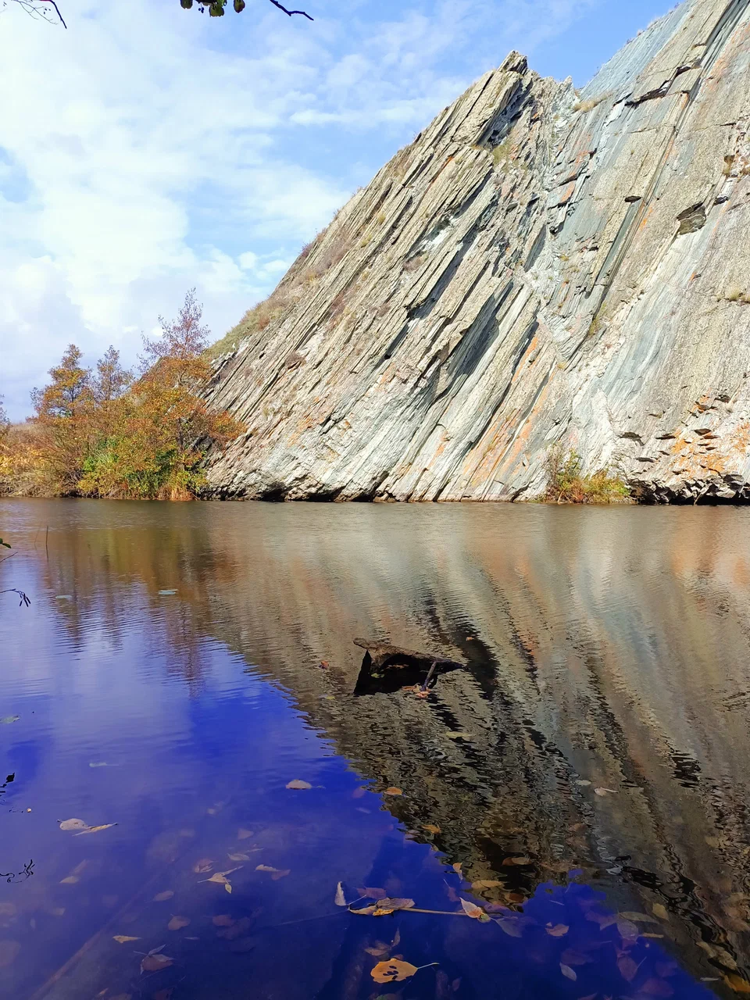
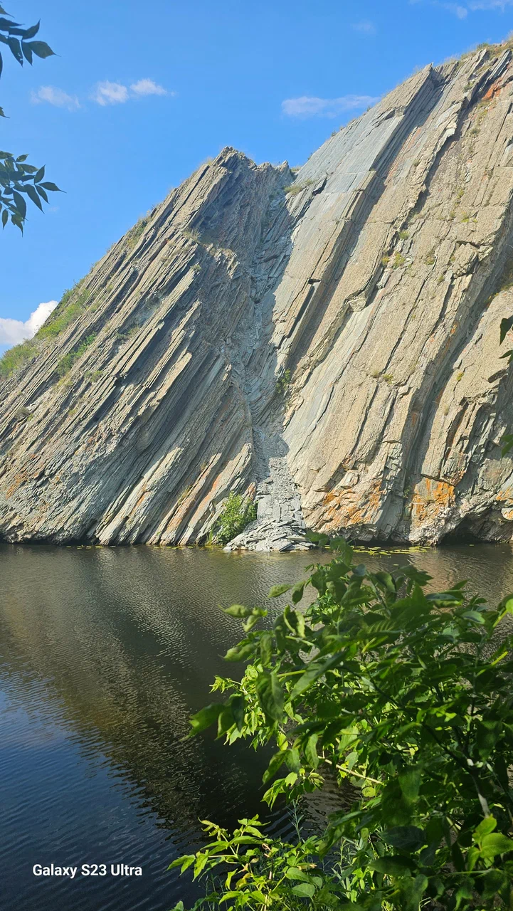

Аймақ туралы
Мылқау ауылы деп аталатын археологиялық орын — табиғаттың тылсым тыныштығын, көркем көріністерді бағалайтын туристер үшін ерекше тартымды мекен. Бұл аймақ Ащылысай теңізінің әсем панорамасымен, тік жартастарымен және тыныш су айдындарымен ерекшеленеді.
Мұнда жүзу мен балық аулауға қолайлы жағдай жасалған, сондықтан Мылқау ауыл демалыс пен табиғат аясындағы серуенді үйлестіретін орынға айналған.
Бейнекөрініс
Мылқау ауылының әсем табиғатын өз көзіңізбен тамашалаңыз
Атаудың шығу тарихы мен аңыздар
1-аңыз: Көріпкел туралы
Аңыздардың бірінде Мылқау ауылда аты-жөні белгісіз бір адам өмір сүргені айтылады. Адамдар оған кеңес сұрап келгенде, көріпкелдің айтатын сөздерін сыртқа бір әйел жеткізіп отырған. Осылайша ауылда артық сөз айтылмай, тыныштық пен сабыр сақталғандықтан ел арасында бұл мекен «мылқау ауыл» аталып кеткен.
2-аңыз: Бақташы Ратай
Бір кездері өмір сүруге қажетті жағдайлардың болмауына байланысты тұрғындар бұл жерден жаппай көшіп кетеді. Ратай есімді бақташы ғана туған жерін тастамайды. Ол туғаннан мылқау болғанымен, өз ісімен, үнсіз еңбегімен туған өлкеге деген шынайы сүйіспеншілігін дәлелдейді. Ауылдың «мылқау» деп аталуын халық оның құрметіне балаған.
Фотогалерея

